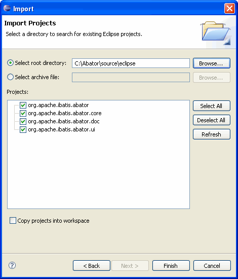

This page contains reference information about how to build and debug Abator from source.
The Abator feature is structured as four different Eclipse projects - a feature project and
three plug-in projects. The feature project groups the three plug-ins together for easy
installation. The Abator feature project is org.apache.ibatis.abator.
This project references the three plug-in projects. The plug-in projects are structured as
follows:
| Plug-in Project | Description |
|---|---|
org.apache.ibatis.abator.core |
This plug-in is an Eclipse library plug-in for the standard Abator JAR file. The purpose of this plug-in is to package the standard JAR and make it available to the other plug-ins. There is a build file in this plug-in (buildAbator.xml) that will compile the core Abator JAR file and update the wrapped JAR files. This makes it easy to keep the plug-in up to date as the core functionality is developed. |
org.apache.ibatis.abator.doc |
This plug-in holds the documentation for Abator. There is a build file in this plug-in (buildDoc.xml) that will build the documentation and package it for inclusion into the Eclipse help system. |
org.apache.ibatis.abator.ui |
This plug-in holds the Java code for the Eclipse user interface for Abator. If you are experiencing trouble with the plug-in specific features (like Java file merging), then the code for those features will be found in this plug-in. |
The following instructions show how to build the Abator feature and plug-ins from the latest source in the Subversion repository. We assume that you are somewhat familiar with Subversion and the Eclipse plug-in development environment (PDE). These instructions also assume you are using Eclipse version 3.2. Things are similar in Eclipse 3.1. The plug-in code is not supported in versions of Eclipse prior to version 3.1.

At this point the projects should be successfully compiled in Eclipse. If you want to debug something in the plug-in, you will need to start another instance of Eclipse in debug mode. The following instructions explain how to do this.
Once you have the other instance of Eclipse started you should create a new Java project in the new workspace, create and fill out an Abator configuration file, and then run Abator. Abator should eventually hit your breakpoint, and then you step through the code.
The following classes will likely be of the most interest in debugging:
| Class | Description |
|---|---|
org.apache.ibatis.abator.ui.actions.RunAbatorThread |
This class is a thread that runs Abator on the selected configuration file.
You can set a breakpoint in the run method of this class to follow
the Abator code generation process from the beginning.
|
org.apache.ibatis.abator.ui.plugin.JavaFileMerger |
This class implements the Java file merge function. You can set a breakpoint
in the getMergedSource method to follow the merging process.
|
The documentation for Abator is integrated into the Eclipse help system.
This is accomplished by building an archive file called "doc.zip" that contains
the documentation for the plug-ins, as well as core Abator documentation and Javadoc.
This archive file is not in Subversion because it is a generated file. If you would
like to rebuild the archive, simply execute the buildDoc.xml file
in the org.apache.ibatis.abator.doc project (an Ant build file).
If you would like to debug the Abator core JAR, then you can create a Java project for the core JAR by following these steps:
Note that Abator is compiled with JDK 1.4.2 for distribution. If you are using a JSE 5.0 or later compiler you will see many warnings in the workspace related to type safety. To disable these warnings, set the compiler compliance level for the new project to 1.4.
If you make a change in the Abator core files, you can use the buildAbator.xml
Ant build file in the org.apache.ibatis.abator.core project to update the
JAR in the plug-in.